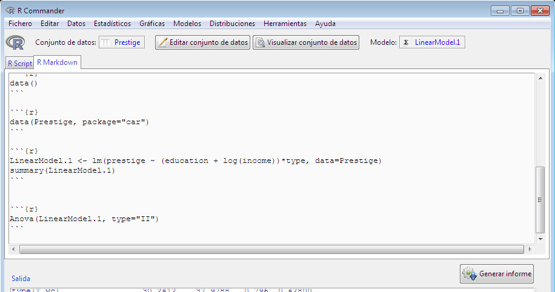
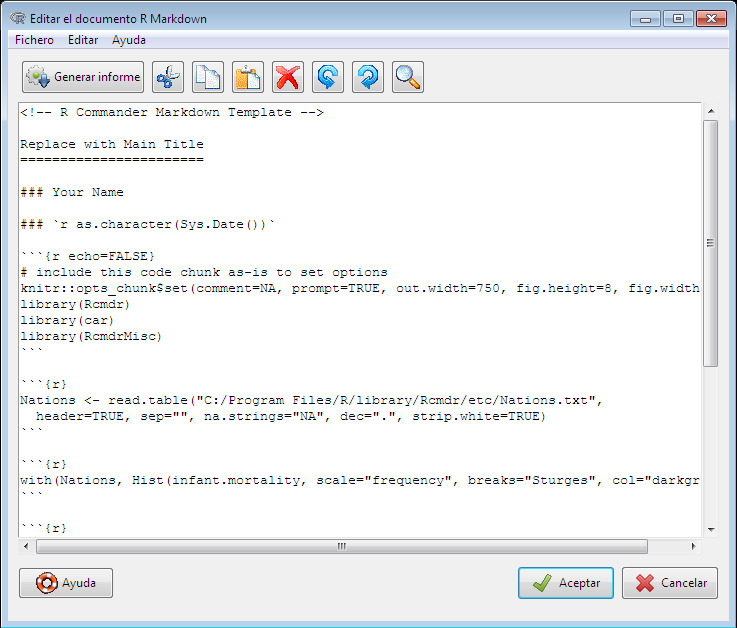

Producing ReportsGeneración de informes
In its default configuration, the R Commander includes an R Markdown tab in the upper pane, which accumulates the commands generated during the session in an R Markdown document.
En su configuración predeterminada, R Commander incluye una pestaña de R Markdown en el panel superior, la cual acumula los comandos generados durante la sesión en un documento de R Markdown.1The R Commander can also optionally create a knitr \(\LaTeX\) document [1] and compile it into a PDF file. This option requires a LaTeX installation, and is activated by setting the Rcmdr option use.knitr to TRUE. See Help -> Commander help and Tools -> Options.R Commander también puede crear de forma opcional un documento de knitr en \(\LaTeX\) [1] y compilarlo en un archivo PDF. Esta opción requiere tener instalado LaTeX y se activa estableciendo la opción use.knitr de Rcmdr en TRUE. Consulte Ayuda -> Ayuda del Commander y Herramientas -> Opciones.Figure 15 shows the R Markdown tab for the current session, which I’ve scrolled to the top of the generated document. As its name implies, R Markdown is a simple markup language, which includes blocks of R commands, and can be used to generate HTML (i.e., web) pages or other types of documents. For more information about R Markdown, select Help -> Using R Markdown from the R Commander menus.La Figura 15 muestra la pestaña R Markdown para la sesión actual, la cual he desplazado hasta la parte superior del documento generado. Como su nombre indica, R Markdown es un lenguaje de marcado sencillo que incluye bloques de comandos de R y que puede utilizarse para generar páginas HTML (es decir, páginas web) u otros tipos de documentos. Para obtener más información sobre R Markdown, seleccione Ayuda -> Uso de R Markdown en los menús de R Commander.2This and some other items in the Help menu require an active internet connection.Este y algunos otros elementos del menú Ayuda requieren una conexión activa a Internet.

Fig. 15: La pestaña R Markdown, con el botón Generar informe.
Each set of commands generated by the R Commander produces a block of R commands in the R Markdown document.Cada conjunto de comandos generado por R Commander produce un bloque de comandos de R en el documento de R Markdown.3Commands that require direct user interaction, such as interactive point identification in a graph, are suppressed in the R Markdown document. As well, commands that generate errors are removed from the document.Los comandos que requieren la interacción directa del usuario, como la identificación interactiva de puntos en un gráfico, se omiten en el documento de R Markdown. Asimismo, los comandos que generan errores se eliminan del documento.These blocks are delimited by ```{r} at the start of each block and by ``` (three back-ticks) at the end of the block. Even if you are unfamiliar with R commands, you can see the relationship between commands and resulting output in the Output pane.Estos bloques están delimitados por ```{r} al inicio de cada bloque y por ``` (tres comillas invertidas) al final del bloque. Incluso si no está familiarizado con los comandos de R, puede ver la relación entre los comandos y el resultado obtenido en el panel de Salida.
The R Markdown tab is editable, and so you can modify and add to the text in the tab. It is generally safe to type whatever explanatory text you wish between blocks of R code (see below). In general, however, unless you know what you’re doing, you should not modify R code blocks in the R Markdown document or add your own code blocks. You can, however, remove entire blocks of code, as long as subsequent blocks don’t depend on them — and you will likely want to remove command blocks that produce unwanted output. Command blocks that produce errors are removed automatically. You can remove the most recent command block by selecting Remove last Markdown Command Block from the Edit menu, or by right-clicking in the R Markdown tab and selecting Remove last Markdown Command Block from the context menu. The first code block (which begins ```{r echo=FALSE} sets some options for the software from the knitr package (Xie, 2013) that is used to process the R Markdown text, and this block should not normally be modified.La pestaña R Markdown; es editable, por lo que puede modificar y añadir texto en ella. En general, es seguro escribir cualquier texto explicativo que desee entre los bloques de código de R (véase más adelante). Sin embargo, por lo general, a menos que sepa lo que está haciendo, no debe modificar los bloques de código de R en el documento de R Markdown; ni añadir sus propios bloques de código. No obstante, puede eliminar bloques de código completos, siempre y cuando los bloques posteriores no dependan de ellos —y es probable que desee eliminar los bloques de órdenes que produzcan resultados no deseados. Los bloques de órdenes que producen errores se eliminan automáticamente. Puede eliminar el bloque de órdenes más reciente seleccionando Borrar el último bloque de comandos Markdown en el menú Editar o haciendo clic con el botón derecho en la pestaña R Markdown; y seleccionando Borrar el último bloque de comandos Markdown en el menú contextual. El primer bloque de código (que comienza con ```{r echo=FALSE}) establece algunas opciones para el software del paquete knitr (Xie, 2013) que se utiliza para procesar el texto de R Markdown, y este bloque normalmente no debería modificarse.
With some lines elided (indicated by . . .), here is the R Markdown document produced for the current session:Omitiendo algunas líneas (indicado por . . .), aquí se muestra el documento de R Markdown producido para la sesión actual:
---
title: "Replace with Main Title"
author: "John Fox"
date: "`r Sys.Date()`" # Uses current date
---
```{r echo=FALSE, message=FALSE}
# include this code chunk as-is to set options
knitr::opts_chunk$set(comment=NA, prompt=TRUE)
library(Rcmdr)
library(car)
library(RcmdrMisc)
```
```{r echo=FALSE}
# include this code chunk as-is to enable 3D graphs
library(rgl)
knitr::knit_hooks$set(webgl = hook_webgl)
```
```{r}
Nations <- read.table("C:/R/R-3.3.2/library/Rcmdr/etc/Nations.txt",
header=TRUE, sep="", na.strings="NA", dec=".", strip.white=TRUE)
```
. . .
```{r}
data(Prestige, package="car")
```
. . .
Let us regress occupational prestige on the education and income levels of the occupations, transforming income to linearize its relationship to prestige:Regresemos el prestigio ocupacional sobre los niveles de educación e ingresos de las ocupaciones, transformando los ingresos para linealizar su relación con el prestigio:
### Linear Model: LinearModel.1: prestige ~ (education + log(income))*type
```{r}
LinearModel.1 <- lm(prestige ~ (education + log(income))*type,
data=Prestige)
summary(LinearModel.1)
```
### Analysis of Variance: LinearModel.1
```{r}
Anova(LinearModel.1, type="II")
```
It is probably unnecessary to explain that you would normally replace title: "Replace with Main Title" with the title of the report that you want to create. Perhaps less obviously, you can type arbitrary explanatory text before the first command block, in between R code blocks --- that is, between the terminating ```; of one block and starting ```{r} of the next --- and after the last command block. You can take advantage of the simple markup provided by R Markdown; for example, text enclosed in asterisks (e.g., *this is important*) will be set in italic type. To illustrate, I added the text "Let us regress occupational prestige ..." immediately before the R command block performing the regression.Probablemente sea innecesario explicar que normalmente sustituiría title: "Replace with Main Title" por el título del informe que desea crear. Quizás menos obvio es que puede escribir texto explicativo arbitrario antes del primer bloque de órdenes, entre bloques de código de R ---es decir, entre los ``` de cierre de un bloque y el ```{r} de inicio del siguiente--- y después del último bloque de órdenes. Puede aprovechar el marcado sencillo que proporciona R Markdown; por ejemplo, el texto entre asteriscos (p. ej., *this is important*) se mostrará en letra cursiva. Para ilustrarlo, añadí el texto "Let us regress occupational prestige ..." inmediatamente antes del bloque de órdenes de R que realiza la regresión.
The R Markdown document also includes automatically generated section headings for some R command blocks. These are preceded by three hashmarks (###), which indicate a level-3 heading. When the R Markdown documented is converted into a report (see immediately below), the headers appear not only in the text but in an automatically generated index. You can edit these headings to customize them, and you can also add your own headings, using, for example, # for a level-1 heading and ## for a level-2 heading.El documento de R Markdown también incluye encabezados de sección generados automáticamente para algunos bloques de órdenes de R. Estos van precedidos por tres almohadillas (###), que indican un encabezado de nivel 3. Cuando el documento de R Markdown se convierte en un informe (véase más abajo), los encabezados aparecen no solo en el texto, sino también en un índice generado automáticamente. Puede editar estos encabezados para personalizarlos y también puede añadir los suyos propios, utilizando, por ejemplo, # para un encabezado de nivel 1 y ## para un encabezado de nivel 2.
Once you have finished editing the R Markdown document, you can generate a report from it in the form of an HTML document (web page), Word document, rich text file, or PDF file by pressing the Generate report button below the R Markdown tab.Una vez que haya terminado de editar el documento de R Markdown, puede generar un informe a partir de él en forma de documento HTML (página web), documento de Word, archivo de texto enriquecido o archivo PDF pulsando el botón Generar informe situado debajo de la pestaña R Markdown.4To generate Word or rich text file documents you must install Pandoc; to generate PDF files, you'll additionally need \(\LaTeX\). To install this optional auxiliary software, use the Tools menu.Para generar documentos en formato Word o archivo de texto enriquecido debe instalar Pandoc; para generar archivos PDF, necesitará adicionalmente \(\LaTeX\). Para instalar este software auxiliar opcional, utilice el menú Herramientas.An HTML report should open in your web browser, and a PDF report in your PDF viewer. Word and rich text files must be opened manually, but can easily be edited further. The R Markdown document can be saved via the File menu.Un informe en HTML debería abrirse en su navegador web, y un informe en PDF en su visor de PDF. Los archivos de Word y de texto enriquecido deben abrirse manualmente, pero se pueden seguir editando fácilmente. El documento de R Markdown se puede guardar a través del menú Archivo.
You can also, and more conveniently, open a separate and larger editor window to edit the R Markdown document (see Figure 16): Select Edit R Markdown document from the R Commander Edit menu; right-click in the R Markdown tab and select Edit R Markdown document from the context menu; or press the key-combination Control-E when the cursor is in the R Markdown tab. The editor supports the usual Edit-menu and right-click context-menu commands, and also allows you to compile the R Markdown document into an HTML report. Clicking the OK button in the editor saves your edits to the R Markdown tab, and clicking Cancel discards your edits. Below the menu in the editor, there is a largely self-explanatory toolbar with various buttons; if you hover the mouse over a button, a "tool-tip" will display.También puede, de forma más cómoda, abrir una ventana de edición independiente y más grande para editar el documento de R Markdown (véase la Figura 16): seleccione Editar documento R Markdown en el menú Editar de R Commander; haga clic con el botón derecho en la pestaña R Markdown y seleccione Editar documento R Markdown en el menú contextual; o presione la combinación de teclas Control-E cuando el cursor esté en la pestaña R Markdown. El editor admite las órdenes habituales del menú Editar y del menú contextual, y también le permite compilar el documento de R Markdown en un informe HTML. Al hacer clic en el botón Aceptar en el editor, se guardan sus modificaciones en la pestaña R Markdown, mientras que al hacer clic en Cancelar se descartan los cambios. Debajo del menú del editor, hay una barra de herramientas en gran medida autoexplicativa con varios botones; si pasa el ratón sobre un botón, se mostrará una "sugerencia" (tool-tip).
You can open the R Markdown editor window at the beginning of a session and leave it open while you work. Commands generated by the R Commander will be entered both into the R Markdown tab and the editor, and you'll be able to write text in the editor as you go. See the editor help for more information.Puede abrir la ventana del editor de R Markdown al comienzo de una sesión y dejarla abierta mientras trabaja. Las órdenes generadas por R Commander se introducirán tanto en la pestaña R Markdown como en el editor, y podrá escribir texto en el editor a medida que avanza. Consulte la ayuda del editor para obtener más información.

Fig. 16: El editor de documentos de R Markdown.
Saving and Printing OutputGuardar e imprimir resultados
You can also save text output directly from the File menu in the R Commander; likewise you can save or print a graph from the File menu in an R Graphics Device window. If you prefer not to use the R Markdown tab, you can collect the text output and graphs that you want to keep in a word-processor document. In this manner, you can intersperse R output with your typed notes and explanations. This procedure, however, has the disadvantage that it is not directly reproducible, while an R Markdown document can subsequently be executed to reproduce your analysis, possibly with modifications.También puede guardar la salida de texto directamente desde el menú Archivo en R Commander; del mismo modo, puede guardar e imprimir un gráfico desde el menú Archivo en una ventana de Dispositivo gráfico de R. Si prefiere no utilizar la pestaña R Markdown, puede recopilar la salida de texto y los gráficos que desee conservar en un documento de procesador de textos. De esta manera, puede intercalar los resultados de R con sus notas y explicaciones escritas. Sin embargo, este procedimiento tiene la desventaja de no ser directamente reproducible, mientras que un documento de R Markdown se puede ejecutar posteriormente para reproducir su análisis, posiblemente con modificaciones.
Open a word processor such as Word, OpenOffice Writer, or even Windows WordPad. To copy text from the Output pane, block the text with the mouse, select Copy from the Edit menu (or press the key combination Ctrl-c, or right-click in the pane and select Copy from the context menu), and then paste the text into the word-processor document via Edit -> Paste (or Ctrl-v or right-click Paste), as you would for any Windows application. One point worth mentioning is that you should use a monospaced ("typewriter") font, such as Courier New, for text output from R; otherwise the output will not line up neatly.Abra un procesador de textos como Word, OpenOffice Writer o incluso WordPad de Windows. Para copiar texto del panel de Salida, seleccione el texto con el ratón, elija Copiar en el menú Editar (o presione la combinación de teclas Ctrl-c, o haga clic con el botón derecho en el panel y seleccione Copiar en el menú contextual) y luego pegue el texto en el documento del procesador de textos mediante Editar -> Pegar (o Ctrl-v o haga clic con el botón derecho en Pegar), como lo haría con cualquier aplicación de Windows. Un punto que merece la pena mencionar es que debe utilizar una fuente monoespaciada ("de máquina de escribir"), como Courier New, para los resultados de texto de R; de lo contrario, la salida no se alineará de forma ordenada.
Likewise, to copy a graph, select File -> Copy to the clipboard -> as a Metafile from the R Graphics Device menus; then paste the graph into the word-processor document via Edit -> Paste (or Ctrl-v or right-click Paste). Alternatively, you can use Ctrl-w to copy the graph from the R Graphics Device, or right-click on the graph to bring up a context menu, from which you can select Copy as metafile.Del mismo modo, para copiar un gráfico, seleccione Archivo -> Copiar al portapapeles -> como Metaarchivo en los menús de la ventana de Dispositivo gráfico de R; luego pegue el gráfico en el documento del procesador de textos mediante Editar -> Pegar (o Ctrl-v o haga clic con el botón derecho en Pegar). Alternativamente, puede utilizar Ctrl-w para copiar el gráfico desde el Dispositivo gráfico de R, o hacer clic con el botón derecho sobre el gráfico para desplegar un menú contextual, desde el cual puede seleccionar Copiar como metaarchivo.5As you will see when you examine these menus, you can save graphs in a variety of formats, and to files as well as to the clipboard. The procedure suggested here is straightforward, however, and generally results in high-quality graphs. Once again, this description applies to Windows systems.Como verá cuando examine estos menús, puede guardar gráficos en una variedad de formatos, tanto en archivos como en el portapapeles. Sin embargo, el procedimiento sugerido aquí es sencillo y generalmente produce gráficos de alta calidad. Una vez más, esta descripción se aplica a sistemas Windows.At the end of your R session, you can save or print the document that you have created, providing an annotated record of your work.Al final de su sesión de R, puede guardar e imprimir el documento que ha creado, proporcionando un registro anotado de su trabajo.
Alternative routes to saving text and graphical output may be found respectively under the R Commander File and Graphs -> Save graph to file menus. Saving the R Commander Script tab, via File -> Save script, allows you to reproduce your work on a future occasion.Se pueden encontrar vías alternativas para guardar la salida de texto y los resultados gráficos bajo los menús Archivo y Gráficas -> Guardar gráfica a archivo de R Commander, respectivamente. Guardar la pestaña Script de R Commander, a través de Archivo -> Guardar script, le permite reproducir su trabajo en una ocasión futura.
Entering Commands in the Script TabIntroducción de órdenes en la pestaña Script
The R Script tab provides a simple facility for editing, entering, and executing commands. Commands generated by the R Commander appear in the Script tab, and you can type and edit commands in the tab more or less as in any editor. The R Commander does not provide a true "console" for R, however, and the Script tab has some limitations. For example, all lines of a multiline command must be submitted simultaneously for execution. For serious R programming, it is preferable to use the script editors provided by the Windows and macOS versions of R, or --- even better --- a programming editor or interactive development environment, such as RStudio posit.co.La pestaña Script R proporciona una herramienta sencilla para editar, introducir y ejecutar órdenes. Las órdenes generadas por el R Commander aparecen en la pestaña Script, y puede escribir y editar órdenes en esta pestaña más o menos como en cualquier editor. Sin embargo, el R Commander no proporciona una "consola" verdadera para R, y la pestaña Script tiene algunas limitaciones. Por ejemplo, todas las líneas de una orden multilínea deben enviarse simultáneamente para su ejecución. Para una programación seria en R, es preferible utilizar los editores de scripts proporcionados por las versiones de R para Windows y macOS, o ---aún mejor--- un editor de programación o un entorno de desarrollo integrado, como RStudio posit.co.6The R Commander will run under RStudio, in which case by default R Commander output and messages are directed to the R console within RStudio.R Commander se ejecutará en RStudio, en cuyo caso, por defecto, los resultados y mensajes de R Commander se dirigen a la consola de R dentro de RStudio.
Using R Commander Plug-insUso de complementos de R Commander
R Commander plug-ins are R packages that add to the capabilities of the R Commander. Many such plug-ins are currently available on CRAN, and may be downloaded and installed in the normal manner. Plug-ins typically add menus or menu items and associated dialog boxes to the R Commander. They may also modify or remove existing menu items or dialogs. A properly programmed R Commander plug-in can be loaded either directly, in which case the R Commander loads along with the plug-in, or from the R Commander via Tools -> Load Rcmdr plug-in(s)... . In the latter event, the R Commander will restart to activate the plug-in. It is possible to use several plug-ins simultaneously, but plug-ins may also conflict with each other. For example, one plug-in may remove a menu to which another plug-in tries to add a menu item.Los complementos (plug-ins) de R Commander son paquetes de R que amplían las capacidades de R Commander. Muchos de estos complementos están disponibles actualmente en CRAN y se pueden descargar e instalar de la forma habitual. Por lo general, los complementos añaden menús o elementos de menú y sus correspondientes cuadros de diálogo a R Commander. También pueden modificar o eliminar elementos de menú o cuadros de diálogo existentes. Un complemento de R Commander correctamente programado se puede cargar directamente, en cuyo caso R Commander se carga junto con el complemento, o bien desde R Commander mediante Herramientas -> Cargar complemento(s) de Rcmdr... . En este último caso, R Commander se reiniciará para activar el complemento. Es posible utilizar varios complementos de forma simultánea, pero estos también pueden entrar en conflicto entre sí. Por ejemplo, un complemento puede eliminar un menú al que otro complemento intenta añadir un elemento.
Terminating the R SessionFinalización de la sesión de R
There are several ways to terminate your session. For example, you can select File -> Exit -> From Commander and R from the R Commander menus. You will be asked to confirm, and then asked whether you want to save the contents of the R Script, Output, and R Markdown windows. Likewise, you can select File -> Exit from the R Console; in this case, you will be asked whether you want to save the R workspace (i.e., the data that R keeps in memory); you would normally answer No: Saving the R workspace will likely create problems in subsequent sessions.Hay varias formas de finalizar la sesión. Por ejemplo, puede seleccionar Archivo -> Salir -> De Commander y de R en los menús de R Commander. Se le pedirá confirmación y luego se le preguntará si desea guardar el contenido de las ventanas Script R, Salida y R Markdown. Del mismo modo, puede seleccionar Archivo -> Salir en la Consola R; en este caso, se le preguntará si desea guardar el espacio de trabajo de R (es decir, los datos que R conserva en la memoria); normalmente respondería No: guardar el espacio de trabajo de R probablemente creará problemas en las sesiones posteriores.
- Y. Xie, “knitr: A general-purpose package for dynamic report generation in R”, 2016. [Online]. Available: https://cran.r-project.org/web/packages/knitr/index.html